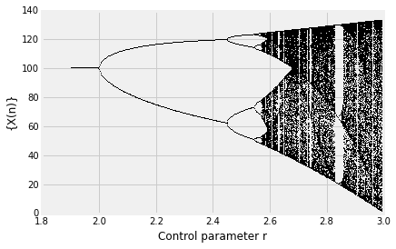
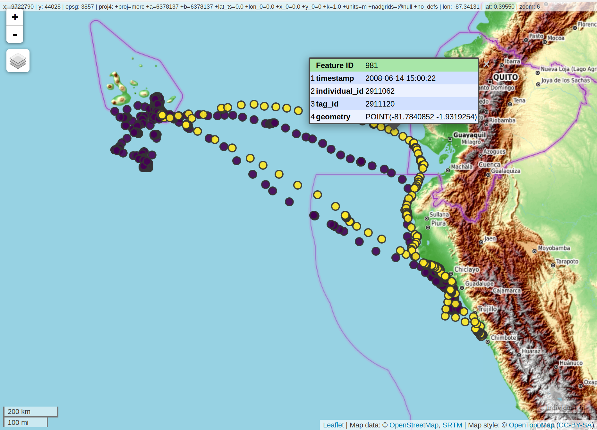
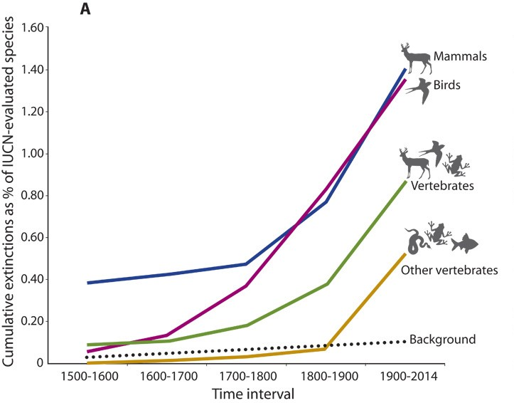

Modules

Topics:
CO2 concentration,
Global mean temperature,
Sea level rise,
Land ice sheet melt,
Arctic sea ice cover
Skills:
Data wrangling: plain text formats,
Tidy data,
Data visualization,
Smoothing

Focal results: Coexistence, Bet hedging, Limit Cycles, Bifurcations, Deterministic Chaos
Methods:

Technologies and data formats: Simple Features Access (ISO 19125) (used in GIS, geojson), Spatial rasters (e.g. geotiff, netcdf), interactive mapping.
 From Worm
From Worm

From Cerbellos et al., https://doi.org/10.1126/sciadv.1400253
Technologies & data formats: JSON, curl, REST APIs